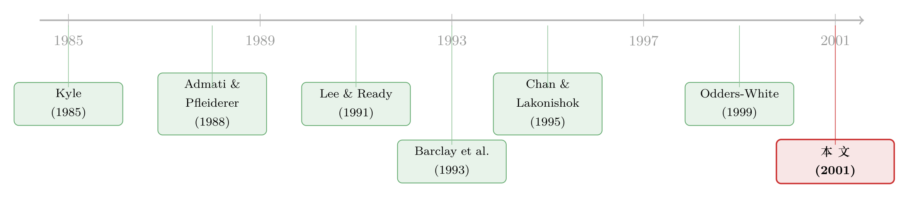

谁的单子在悄悄推着股价走？
本文读的是 Chakravarty (2001, Journal of Financial Economics)：用纽交所的审计追踪数据 (TORQ) 把每一笔成交拆到「谁发起的」，作者发现一只股票绝大部分的累计价格变动 —— 约 79% —— 落在中等规模 (500–9,999 股) 的成交上；而这块「不成比例」的价格冲击，几乎全部来自机构发起的中等单。换句话说，真正在悄悄推着股价走的，不是大单，也不是小单，而是机构那一摞「不大不小」的单子。
1 一个被反复讲、却始终没讲到底的故事
先从一个所有人都听过的直觉说起。
一个手里攥着私密信息的投资者，会怎么交易？他不会一口气把单子砸出去 —— 那样等于把信息白白送给市场，价格瞬间反应，他什么也赚不到。他也不会把单子切得太碎、一手一手地挂 —— 那样交易成本会把利润吃光。Kyle (1985) 和 Admati & Pfleiderer (1988) 早就把这件事写进了模型：知情者会把交易藏在「中等规模」里，慢慢地、悄悄地把信息变现。
这就是「隐蔽交易」(stealth-trading) 假说。它有一个极其干净、可以拿数据去验的推论：如果股价变动主要由知情交易推动，而知情者又偏爱中等规模的单子，那么一只股票的累计价格变动，就应当不成比例地集中在中等规模的成交上 —— 中等单贡献的价格变动占比，会显著高于它们在「成交笔数」或「成交量」里的占比。
Barclay et al. (1993) 第一个把这件事做了出来。他们看了 1981–1984 年间 108 起要约收购 (tender offer) 案例，发现在收购公告前那段「最该有人提前下注」的窗口里，中等规模成交（同样定义为 500–9,999 股）贡献了高达 92.8% 的累计价格变动。证据很漂亮，假说看起来站得住。
但这里有一个被绕过去的问题。
隐蔽交易假说的整套逻辑，是建立在「中等单背后站着知情者」之上的。可 Barclay 他们手里的数据，只能看到成交的规模，看不到成交的身份 —— 那个发起中等单的人，到底是谁？是机构，还是散户？是「聪明钱」，还是只是一个碰巧下了中等单的普通人？只要这个问题悬而未决，「中等单推动价格」就只是一个相关性，而不是「知情者在隐蔽交易」的直接证据。
Chakravarty (2001) 这篇论文，做的就是把这最后一块拼图按上去：把每一笔成交，拆到「谁发起的」。
2 关键一步：一份能看见「身份」的数据
要回答「谁的单子」，普通的成交数据是不够的。TAQ 也好、ISSM 也好，它们记录了价格、时间、成交量，却不记录订单背后是谁。
作者用的是 TORQ (Trades, Orders, Reports, and Quotes) 数据库 —— 纽交所为一个分层随机抽样的股票样本，保留的 1990 年 11 月到 1991 年 1 月（63 个交易日）的完整记录。它由四个文件组成，前两个（成交、报价）和 TAQ 没什么两样，真正让它独一无二的是第四个：审计追踪文件 (audit file)。纽交所维护这套记录本是为了内部稽查，Hasbrouck et al. (1993) 报告它的整体准确率约 98%。
这份审计文件里，每一笔成交都附着一个账户类型 (account type)：
- Account Type I —— 个人投资者（散户）；
- Account Type A —— 机构；
- Account Type P —— 交易所会员为自营账户下的单。
作者把 P 和 A 合并视作「机构」（理由是绝大多数交易所会员本身就是机构），并做了稳健性检验：只用 A 类作机构，结果几乎一模一样。这份数据的可信度也有旁证 —— Radhakrishna (1994) 指出，TORQ 里散户的总成交量，和证券业协会 (SIA) 用完全独立的监管申报数据估出来的散户成交量，量级吻合。
这是全文最值钱的地方：身份不是作者「猜」出来的（比如「大单大概是机构」），而是数据直接记录的。微观结构里最难的，从来不是算价格冲击，而是知道价格冲击的另一端坐着谁。
接着，一个自然的问题是：怎么知道一笔成交是买方发起还是卖方发起的？审计文件本身不标。作者用了微观结构里的标准工具 —— Lee & Ready (1991) 算法：成交价落在买价（或买卖中点以下）就算卖方发起，落在卖价（或中点以上）就算买方发起，正好踩在中点的，用 tick test 看前一笔价格的方向。作者还用 Odders-White (1999) 的另一套分类法重做了一遍，结果「几乎完全相同」。
3 样本：只盯着「涨上去」的那些股票
这里有一个容易被误读、但其实很关键的设计选择。
作者并没有围绕某个信息事件（财报、收购）来取样，而是只挑那些在样本期里显著上涨的股票：97 只在三个月里至少涨了 5% 的纽交所个股。它们的平均涨幅是 28%，最高 124%，而同期大盘只涨了约 12%。
为什么这么挑？逻辑和 Barclay & Warner 当年挑要约收购标的是一脉相承的：隐蔽交易如果真的存在，多半集中在市场的某一侧。一只确实在往上走的股票，背后更可能有人握着「这股要涨」的信息在悄悄买。把样本限定在这些股票上，等于把探测器对准了信号最强的地方 —— 用作者的话说，是为了「最大化探测到隐蔽交易的概率」。
至于为什么不对称地也看「大跌」的股票？作者给了三条理由：其一，1934 年《证券交易法》禁止公司内部人卖空，知情者在下跌股里未必活跃；其二，TORQ 里跌了 5% 以上的股票只有 14 只，且多半交易清淡，结论不可靠；其三，几乎不动的股票两侧都有知情交易，反而最难干净地识别。
这个取样是后面所有质疑的源头 —— 它不是随机样本。我们在最后的判断里再回到它。
4 主要结果（一）：是中等单，不是大单
先复制 Barclay et al. (1993) 的核心检验，但用的是一个普通的横截面、而非收购事件。
作者把成交分成三档，沿用 Barclay et al. (1993) 的定义：小单 100–499 股、中单 500–9,999 股、大单 10,000 股及以上。对每只股票，把落在某一档上的所有「价格变动」（定义为该笔成交价与前一笔成交价之差）加总，再除以该股全样本的累计价格变动；最后跨 97 只股票求加权均值（权重是各股累计价格变动的绝对值）。
结果（表 1）相当干净：
| 档位 | 占累计价格变动 | 占成交笔数 | 占成交量 |
|---|---|---|---|
| 小单 (100–499) | −3.86% |
36.42% |
2.81% |
| 中单 (500–9,999) | 78.63% |
57.35% |
46.69% |
| 大单 (10,000+) | 25.23% |
6.23% |
50.50% |
把这张表读透，三个竞争假说当场分出胜负：
- 隐蔽交易假说：中单贡献了约
79%的累计价格变动，却只占57%的笔数、47%的成交量 —— 价格冲击「不成比例」地大。✔ - 公共信息假说（价格变动应正比于成交笔数）：小单占了
36%的笔数却几乎不推动价格（−4%），大单占6%的笔数却推动了25%。「价格变动占比 = 笔数占比」的假设在1%水平上被拒绝。�’✘ - 成交量假说（价格变动应正比于成交量，即「大单推得多」）：大单占了过半的成交量（
50.50%），却只推动25%的价格；中单成交量不到一半，却推动近79%。「价格变动占比 = 成交量占比」同样在1%水平被拒绝。✘
作者还做了非参数的 Spearman 秩相关检验：逐股来看，各档累计价格变动与对应的笔数占比、成交量占比之间的相关，都与零没有显著差别（5% 水平）。也就是说，价格变动和「笔数 / 成交量」根本不是按比例配对的。
到这一步，Barclay et al. (1993) 的结论在一个不依赖收购事件的普通样本里被复制了：推动价格的是中等单。但故事还没讲到底 —— 我们仍然不知道，这些中等单背后是谁。
5 反转（其实是收束）：是机构的中等单
真正的关键一步，是把那 79% 再按身份拆开。
在做这件事之前，作者先解决了一个数据上的硬骨头。公开成交数据有个老毛病：一笔报告出来的成交，和它背后的订单不是一一对应的（Bronfman, 1992）。一笔 800 股的成交，可能是一个 800 股买单配两个 400 股卖单，做市商既可以报成「一笔 800 股的中单」，也可以报成「两笔 400 股的小单」。这会给「规模—价格」的关系注入噪声。更麻烦的是，发起方一侧可能混着不同身份的人 —— 一笔 5,000 股的买方发起成交，可能是一个散户买 2,000 股、一个机构买 3,000 股拼出来的，那这笔的价格冲击该算谁的？
作者的处理干脆利落：只保留发起方 100% 属于同一类交易者的成交。一笔 20,000 股的买方发起单，如果四个发起买家全是机构，就留下；只要混进一个别的身份，就剔除。过滤之后剩 151,367 笔（约为初始样本的 60%），这就是研究样本。作者又用 90%、75%、50% 三档更宽松的门槛重做，结论「实质上一致」—— 门槛越松，样本越大但噪声越多，是一个清清楚楚的取舍。
拆开之后，答案浮出水面：那约 79% 的累计价格变动，几乎全部来自机构发起的中等单。机构的中等单造成的累计价格变动占比，远高于它们在笔数或成交量里应得的份额 —— 隐蔽交易的根，在机构那里。
大单这一侧的对比更刺眼。机构的大单贡献了约 23% 的累计价格变动，而散户的大单只贡献约 1% —— 可两者的平均单子规模其实差不多：散户大单平均约 19,000 股（≈10,383,800 / 547），机构大单平均约 20,400 股（≈158,856,300 / 7,797）。规模相当、价格冲击却差了二十多倍，这只能说明：市场把机构的单子当成「知情」的来读，把散户的单子当成「噪声」来读。同样一笔大单，因为发起人是谁，价格反应天差地别。
这正是全文的「一个核心」：把「中等单推动价格」这个老结论，向前推进了决定性的一步 —— 推动价格的不是「中等规模」这个属性本身，而是「中等规模 + 机构身份」这个组合。规模只是知情者的伪装，身份才是信息的载体。
作者还做了一项重要的稳健性处理：机构的中等单，平均比散户的中等单更大。会不会「机构中单推得多」其实只是「机构中单更接近大单」的假象？作者对此做了控制，结论依旧成立。机构中等单这块不成比例的贡献，在整个数据集里普遍存在，且在大公司里证据更强。
至此，街头那句老话 —— 「机构是知情交易者」—— 第一次有了来自非公开身份数据的直接证据。
6 文献脉络
把这条线捋一遍，它的来龙去脉其实很清晰。
最上游是两篇理论：Kyle (1985) 的连续拍卖与内幕交易模型，告诉我们知情者会策略性地把单子摊薄；Admati & Pfleiderer (1988) 则解释了知情交易与流动性交易为何会在某些时段「扎堆」。这两篇共同孕育了「知情者偏爱中等规模」的直觉。
接着，Barclay et al. (1993) 把直觉变成了可检验的「隐蔽交易假说」，并在要约收购样本里给出第一组证据（中单贡献 92.8%）。与此同时，微观结构这一脉积累了把「成交—价格」算清楚的工具：Lee & Ready (1991) 的成交方向分类、Hasbrouck (1991) 对成交信息含量的度量，以及 Chan & Lakonishok (1993, 1995) 对机构成交日内价格行为的刻画。

然后，TORQ 这类带身份的数据出现了，让「谁在交易」第一次可以被直接观察。Chakravarty (2001) 站在这个节点上，把 Barclay 的「规模故事」和 Chan-Lakonishok 的「机构故事」缝在一起，给出了「是机构的中等单」这个更锋利的结论。再往后，Odders-White (1999) 提供的替代分类法被用作稳健性检验，而这条「拆解成交、追问身份」的思路，也延续到了后来对动量、订单失衡的研究中（关于把成交单按大小拆开来解释动量，可参见《动量到底是谁干的？——把成交单拆成大小两摞来看》；关于机构是否「提前」掌握了消息，可参见《财报还没发，机构已经站好了队》）。
7 评论与延伸（Q&A + 研究方向）
(a) 几个可能的疑问
Q：只挑「显著上涨」的股票，会不会把结论挑出来？
这是最该担心的一点，而且是双刃的。一方面，挑上涨股是为了对准信号最强处，合情合理；另一方面，它使样本不再随机，「机构中单推动价格」的外部有效性要打折扣 —— 我们只知道在「确实在涨、且很可能有人提前知情」的股票里成立，未必能推广到平静或下跌的股票。作者自己也承认下跌股没法对称地看（卖空限制 + 样本太小）。所以严格说，这篇是「条件于上涨」的证据。
Q：把 P 类（会员自营）并进机构，会不会污染结论？
作者预料到了，所以专门只用 A 类（纯机构）重做，结果「几乎完全相同」。这条稳健性挺关键，否则「机构」里混着做市商/自营盘，解释会含糊。
Q：会不会只是「机构中单恰好更大、更接近大单」造成的假象？
作者识别并控制了「机构中单 > 散户中单」这个事实，结论不变。这说明驱动力是身份，不是规模在档位内的漂移。
Q：用 Lee-Ready 定方向、用 100% 同质过滤，会不会引入选择偏差？
方向分类用 Odders-White (1999) 的替代方案复核过，结果一致；同质过滤则用 90/75/50% 三档门槛复核，结论「实质一致」。两处稳健性都做了，可信度较高。不过 100% 门槛保留的是「最干净」的成交，这些成交是否系统性地更知情，理论上仍是个隐忧。
Q：「机构是知情者」—— 这是因果，还是只是相关？
严格讲是相关：市场把机构单当知情信号来定价（大单
23%vs1%的对比），并不直接证明机构「事前真的知道」基本面。它证明的是「机构单携带的信息含量更高」，至于这信息是私密消息、还是更强的处理能力，本文无法分辨。
Q：和「内幕交易」研究是一回事吗？
不是。内幕交易研究（如 Meulbroek, 1992；Chakravarty & McConnell, 1997, 1999）盯的是被认定为非法的特定个体；这篇盯的是「机构」这一整类、在普通交易日里的常态行为。它说的是知情交易的「日常版」，而非「犯罪版」。
(b) 几个可能的研究问题与提案
1. 把「隐蔽交易」搬到公司债市场
【经济故事】公司债是 OTC、交易商市场，知情者（尤其机构）的隐蔽动机可能更强，因为流动性更差、信息更不对称。中等规模的债券成交，会不会同样不成比例地推动价格？ 【可行性】中。TRACE 有成交规模和方向（可推断），但缺乏 TORQ 式的「账户类型」。需要用经销商—客户标识或保险公司持仓（NAIC）间接识别机构。识别身份是主要难点，doable 但要拼数据。
2. 外资 vs 本土机构：谁的中等单更「知情」？
【经济故事】本文把交易者分成「机构 / 散户」，但「机构」内部并不均质。外资机构常被认为信息劣势（也有相反证据）。若有带国籍标识的成交数据，可检验外资的中等单是否同样携带不成比例的价格冲击。 【可行性】中。韩国、台湾等市场有逐笔带投资者类型（含外资）的交易所数据，正好能复制本文设计（可呼应《外资真有「信息劣势」吗？》的争论）。识别清晰，doable。
3. 算法/高频时代，隐蔽交易的「最优规模」漂移了吗？
【经济故事】1990 年的「中等」是 500–9,999 股。如今订单被算法切成碎片，知情者的伪装尺度可能整体下移到「小单」。用现代逐笔数据重估「价格冲击最集中的规模档」，能看出隐蔽交易随市场结构的演化。 【可行性】高（若能拿到带标识的数据）。难点同样是身份；但即便没有身份，单看「价格冲击 vs 规模」的分布如何随年代漂移，本身就有价值。
4. 把身份维度接到订单失衡—收益预测上
【经济故事】订单失衡能预测个股收益（见《一百万股，到底是买还是卖？》）。若把失衡按「机构中单 / 散户单」拆开，机构中单的失衡是否有更强、更持久的预测力？这等于给本文的横截面结论加上一条时间序列含义。 【可行性】中。需要带身份的逐笔数据 + 标准的可预测性回归框架，识别直接。
8 我的判断
贡献。 这篇论文的价值，不在于它「新」，而在于它把一个流行假说里最关键、却一直被假设掉的环节做实了。Barclay et al. (1993) 留下的逻辑缺口是「中等单背后是谁」，Chakravarty 用一份能看见身份的数据，干净利落地填上：是机构。规模相同、价格冲击差二十倍的机构大单 vs 散户大单那组对比，尤其有说服力 —— 它几乎是「市场把谁当聪明钱」的一张快照。方法上的纪律也好：账户类型、方向分类、同质门槛，每一处都配了稳健性检验。
对识别的担忧。 最大的软肋是样本 —— 只看上涨股，使结论「条件于上涨且很可能有知情」。这不是错误，而是边界：它告诉我们隐蔽交易在「该发生的地方」确实发生了，却没告诉我们它在一般股票里有多普遍。其次，「机构知情」是从价格反应反推出来的相关性，本文没有、也无法把「私密信息」和「更强的信息处理能力」分开 —— 这两种解释对资产定价的含义其实不同。再者，63 个交易日、97 只股票的样本，放在今天看相当小。
后续想看到什么。 我最想看的，是把这套「拆身份」的思路接到信用市场和外资持有人上去：在流动性更差、信息更不对称的公司债里，机构的隐蔽交易是否更猖獗？以及，当「机构」被进一步拆成外资 / 本土、主动 / 被动之后，那块不成比例的价格冲击，究竟落在谁的单子上 —— 那才是「谁在悄悄推着价格走」这个问题，真正完整的答案。
参考文献
- Admati, A., Pfleiderer, P. (1988). A theory of intraday patterns: volume and price variability. Review of Financial Studies 1, 3–40.
- Barclay, M.J., Dunbar, C.G., Warner, J.B. (1993). Stealth and volatility: which trades move prices? Journal of Financial Economics 34, 281–306.
- Bronfman, C. (1992). Limit order placement, the supply of liquidity, and execution risk: an empirical investigation. Unpublished, University of Arizona.
- Chakravarty, S. (2001). Stealth-trading: which traders' trades move stock prices? Journal of Financial Economics 61(2), 289–307.
- Chakravarty, S., McConnell, J.J. (1999). Does insider trading really move stock prices? Journal of Financial and Quantitative Analysis 34, 191–209.
- Chan, L., Lakonishok, J. (1993). Institutional trades and intra-day stock price behavior. Journal of Financial Economics 33, 173–199.
- Chan, L., Lakonishok, J. (1995). The behavior of stock prices around institutional trades. Journal of Finance 50, 1147–1174.
- Hasbrouck, J. (1991). Measuring the information content of stock trades. Journal of Finance 46, 179–207.
- Kyle, A.S. (1985). Continuous auctions and insider trading. Econometrica 53, 1315–1336.
- Lee, C.M.C., Ready, M. (1991). Inferring trade direction from intradaily data. Journal of Finance 46, 733–746.
- Meulbroek, L. (1992). An empirical analysis of illegal insider trading. Journal of Finance 47, 1661–1699.
- Odders-White, E.R. (1999). On the occurrence and consequences of inaccurate trade classification. Unpublished, University of Wisconsin, Madison.
- Radhakrishna, B. (1994). Investor heterogeneity and earnings announcements. Unpublished, University of Minnesota.